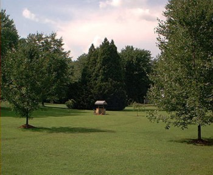

Auto adjust carousel
HTML:
<div id="auto_adjust_carousel">
<div class="item"> <img src="images/1.jpg" height="100%" /> </div>
<div class="item"> <img src="images/2.jpg" height="100%" /> </div>
<div class="item"> <img src="images/3.jpg" height="100%" /> </div>
<div class="item"> <img src="images/4.jpg" height="100%" /> </div>
<div class="item"> <img src="images/5.jpg" height="100%" /> </div>
<div class="item"> <img src="images/6.jpg" height="100%" /> </div>
<div class="item"> <img src="images/7.jpg" height="100%" /> </div>
<div class="item"> <img src="images/8.jpg" height="100%" /> </div>
<div class="item"> <img src="images/9.jpg" height="100%" /> </div>
</div>
JS:
$('#auto_adjust_carousel').agile_carousel({
number_slides_visible: "4",
scroll: 3,
auto_adjust: true
});


